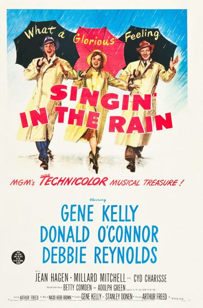

Singin' in the Rain

Starring: Gene Kelly, Donald O'Connor, Debbie Reynolds
Director: Gene Kelly, Stanley Donen
Writer: Betty Comden, Adolph Green
Producer: Arthur Freed
Singin' in the Rain is a 1952 American musical romantic comedy film directed and choreographed by Gene Kelly and Stanley Donen, starring Kelly, Donald O'Connor and Debbie Reynolds, with Jean Hagen, Millard Mitchell, Douglas Fowley, Rita Moreno and Cyd Charisse in supporting roles.
Trivia
- Selected for the National Board of Review: Top Ten Films.
- Also nominated for: Academy Award for Best Supporting Actress; Academy Award for Best Original Musical Score.
Previous Showings
26 Runs • 16 Festivals
All runs on record (26):
- July 27 - 30, 1991w/ The Band Wagon
- April 4 - 7, 1992w/ Three Little Words
- July 31 - August 3, 1993w/ The Adventures of Robin Hood
- July 23 - 25, 1994w/ Love Me or Leave Me
- February 17 - 24, 1996w/ For Me and My Gal
- June 22 - 25, 1996w/ An American in Paris
- September 4 - 7, 1999Summer 1999w/ An American in Paris
- June 30 - July 6, 2000Summer 2000w/ Gentlemen Prefer Blondes
- December 6 - 15, 2002Fall Follies
- February 6 - 8, 2004w/ Annie Get Your Gun
- October 21 - 23, 2005Fall 2005w/ Moon Over Miami
- January 26 - 28, 2007w/ An American in Paris
- July 5 - 8, 2008Summer 2008 Bette Davis, James Stewart, silent films and more!w/ Kiss Me Kate
- June 12 - 15, 2009Summer 2009w/ Citizen Kane
- October 30 - 31, 200920th Anniversary Festivalw/ The Adventures of Robin Hood
- June 26 - 29, 2010Summer 2010w/ Casablanca
- May 28 - 30, 2011Musicalsw/ The Pirate
- August 11 - 14, 2012Summer 2012w/ An American in Paris
- June 1 - 2, 2013The 1950sw/ Brigadoon
- June 27 - July 6, 2014w/ The Wizard of Oz
- February 18 - 28, 2016w/ Laura, Sunset Boulevard
- May 26 - 28, 2017Classic Comedy With Cary Grant, Carole Lombard, W.C. Fields and more!w/ Cover Girl
- June 15 - 17, 2018Hitchcock and Other Masters of Suspense, plus Frankenstein at 200w/ The Adventures of Robin Hood
- October 26 - 28, 2018Gene Kelly Film Festival "Gotta Dance!"w/ Brigadoon
- August 16 - 17, 2025Summer 2025w/ Cover Girl
- July 17 - 19, 2026Summer 2026 including the Films of Marilyn Monroew/ Gentlemen Prefer Blondes